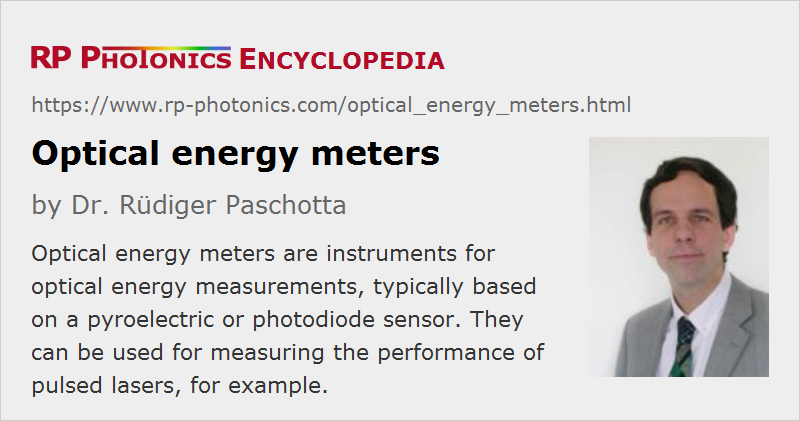

Optical Energy Meters
Definition: instruments for measuring optical pulse energies
Alternative terms: laser energy meters, joule meters
More general term: optical metrology instruments
German: Laserenergiedetektoren
Categories: photonic devices, light detection and characterization
How to cite the article; suggest additional literature
Author: Dr. Rüdiger Paschotta
An optical energy meter (or laser energy meter) is an instrument for the measurement of optical pulse energies, for example for pulses from Q-switched lasers. It generally works in a wide range of pulse durations, with limitations discussed below. While some instruments can detect very faint pulses in the picojoule region, others are suitable for high pulse energies of many joules.
Most optical energy meters are suitable only for light beams with a quite limited beam radius, not e.g. for diffuse light, but there are e.g. special sensor heads with an integrating sphere, which can accept and precisely measure even highly divergent input beams. However, most applications involve laser beams where the handling of strong divergence is not required; one may then still benefit from the high spatial uniformity of response provided by an integrating sphere.
For pulse trains with a constant pulse repetition rate, one can calculate the average pulse energy by dividing the average power, measured with an optical power meter, by the repetition rate. One cannot measure pulse energy fluctuations that way, however. An optical energy meter can separately measure the energy of each pulse and possibly also provide statistics on the measured energies of multiple pulses.
Normally, an optical energy meter comes with a sensor head containing the energy sensor, which is typically mounted with a post for receiving a horizontal input light beam in a certain height above the optical table. A sensor head may be equipped with additional optical attenuators for extending the measurement range; these are particularly offered for photodiode-based devices.
The sensor head may be connected to a stand-alone display instrument, containing an analog or digital display for the laser power. Frequently, it allows the user to choose between different energy ranges, and possibly to do other settings, for example concerning display modes or the laser wavelength. It may also have an analog electrical output, delivering a voltage signal which is proportional to the last received pulse energy, and/or a digital interface (e.g. USB, GPIB or RS-232) for connection to a computer.
Display instruments can often be combined with different sensor heads – even with sensor heads of different type, e.g. pyroelectric and photodiode-based types. Some instruments can also work as optical power meters.
There are also compact USB interfaces with which an energy sensor can be connected to a computer. They contain only little electronics, in particular an analog-to-digital converter in addition to the digital interface. One uses a software coming with the device for displaying values, changing measurement ranges, possibly also for data logging and similar purposes, going beyond the functionality of typical stand-alone energy meters. Such devices save the cost for an extra display and may also be quite convenient, for example for an engineer traveling with a notebook and only a minimum of extra instruments to carry. Also, such energy sensors may be connected to more complex systems.
Sensor Types
Pyroelectric Sensors
Most optical energy meters are based on the principle of a pyroelectric detector, which is a kind of thermal detector. Most of the incident optical energy is absorbed e.g. by some black coating. The heat is then conducted into a ferroelectric crystal, which produces a voltage pulse, the magnitude of which is proportional to the pulse energy.
Such thermal energy meters are typically usable for pulse energies between a few nanojoules and many joules – but note that a single sensor head usually cannot span that whole range.
Pyroelectric energy meters are reasonably precise and are usable in a wide wavelength range (with fairly wavelength-independent sensitivity). They are fairly robust, although too tight focusing onto the absorber should be avoided. With high quality absorbers (e.g. based on ceramic materials), they can even withstand quite substantial optical peak intensities.
For more details, see the article on pyroelectric detectors.
Photodiodes
Far more sensitive energy meters can be made with photodiodes, most often based on silicon (Si), but for the near infrared also with germanium (Ge). Indium gallium arsenide (InGaAs) is less common for energy meters, since large area InGaAs detectors are expensive. Energies in the picojoule region can be measured. Photodiodes can also be used for measuring high energies when a suitable attenuator is used. They are, however, less robust than thermal energy meters: they are more easily damaged when exposed to too high optical intensities.
Due to the high sensitivity of photodiodes, they are also quite suitable for sensor heads with an integrating sphere. In that case, one may also use an InGaAs photodiode, because a large input area can then be achieved despite a small area photodiode.
Also, the sensitivity of a photodiode is rather wavelength-dependent, so that a photodiode-based energy meter usually requires the user to make a setting for the wavelength. The device then uses an internal calibration table to compensate for the wavelength-dependent responsivity. One should of course not forget to adjust that setting when using the energy meter for a laser operating at a different wavelength, because otherwise the energy calibration will be wrong. Obviously, this method does not work for beams with a very broadband or variable optical spectrum, whereas it may be perfectly suitable in situations where the laser wavelength is rarely changed.
Specifications for Optical Energy Meters
Spectral Response
The manufacturer normally specifies a certain range of optical wavelengths for which the quoted measurement accuracy is achieved. For thermal detectors, that range can be rather broad, e.g. extending far into the infrared spectral region, because it is not too difficult to make a broadband absorber, e.g. with a black coating. Note that the quoted spectral range may be smaller than the spectral response; there may be wavelength regions where the detector reacts, but not with a calibrated response.
Photodiode-based instruments may also work in a wide wavelength range, e.g. with a Si-based diode from the near ultraviolet to somewhat beyond 1 μm, but with the responsivity varying substantially in such a range. Therefore, as explained above, the user will have to set the wavelength, and the instrument will usually have to “believe” that this setting is correctly done. In principle, such an energy meter may be equipped with a wavelength sensor, but this is not common.
Energy Measurement Ranges
Most energy meters allow the user to switch between different measurement ranges – for example, with maximum energies of 100 nJ, 300 nJ, 1 μJ, 3 μJ and 10 μJ.
The maximum allowed energy for a particular sensor head is mostly limited by damage issues. Note, however, that one can easily damage a sensor head with optical energies well below the maximum allowed energy, when delivering the input beam with an inappropriately small beam diameter. The local intensity then becomes too high, which is particularly an issue for photodiode-based devices. (Even well before damage occurs, there may be local saturation effects, leading to wrong readings.) Instrument specifications therefore often include a maximum allowed input fluence (in J/cm2).
There may be a further limitation for the allowed average power. That means that for the highest possible pulse repetition rates, the pulse energy needs to be limited, because otherwise there would be too strong heating of the sensor.
The minimum measurement range is limited by measurement noise – typically by noise coming from the sensor head. The lowest energy range will usually be chosen such that the measurement uncertainty still stays at least 10 to 20 dB below the maximum energy.
Photodiode-based energy sensors are far more sensitive than thermal ones. Here, the lowest measurement ranges are often in the picojoule region. For the sensitive measurement ranges, one will of course have to carefully avoid influences of ambient light, e.g. by using proper shields (e.g. black anodized tubes around the beam path) and/or by working in a dark laboratory.
Accuracy
Typical measurement accuracies are of the order of ±3% or ±5% for powers near the maximum reading in a certain measurement range. Energies well below the maximum in some range may be less accurately measured.
Substantially better accuracies would require regular re-calibration and are anyway limited by detector uniformity (see below), thermal drifts and other influences.
Maximum Repetition Rate
Thermal energy sensors are quite limited in terms of the maximum possible pulse repetition rate. Particularly fast devices can be used with tens of kilohertz or even well over 100 kHz, while others are limited to a few kilohertz or even less than 1 kHz. Tentatively, devices for higher energies are slower.
Photodiode-based energy meters can be much faster, e.g. for pulse repetition rates of hundreds of kilohertz.
Allowed Range of Pulse Durations
Generally, pulse energy meters do not temporally resolve the pulses, and the displayed energies are not significantly affected by the pulse duration. However, the pulses should not be too long; there may be a limit e.g. at a couple of microseconds (very much depending on the type of device).
On the other hand, very short pulses may be a problem in combination with high energies, because the peak power and peak intensity can then be very high. Device specifications normally do not include a minimum allowed pulse duration, since that would have to depend on the beam area and possibly on the wavelength, but in practice one might experience limitations in extreme cases, particularly when the beam diameter is made too small.
Active Area and Uniformity of Response
Typical active areas of power meters are circular or square-shaped with dimensions between a few millimeters and a few centimeters. Larger active areas are typically offered by higher-energy devices.
A possible problem with both thermal and photodiode-based optical energy meters is the uniformity of response. For thermal sensors, a lack of uniformity can result from a dependence of the resulting absorbance or temperature distribution for different beam positions. For photodiodes, a nonuniform response can easily result from damage with too high optical intensities.
Sensor heads with an integrating sphere naturally provide the highest detector uniformity.
Electronic Outputs
Some instruments have an analog output (e.g. through a BNC socket), where the output voltage is usually proportional to the energy of the last registered pulse relative to the maximum energy in a certain measurement range.
Digital interfaces are very versatile, allowing for substantially expanded functionality on a computer. For example, although data logging may be provided even by stand-alone devices, it can be more convenient to process and store such data on a computer.
Data Logging and Pulse Energy Statistics
While a simple optical energy meter may simply display the energy of the last received pulse, more advanced devices offer substantially enhanced functionality.
Data logging means that all the measured pulse energies, possibly together with the time of recording, are stored in a file for later analysis. In some cases, instead of taking all pulse energies, one can take samples of pulses with a certain lower repetition rate, so that the amount of data is correspondingly reduced.
A graphical digital display may work in different display modes. Some examples:
- It may display all pulse energies versus time or pulse number, or only the data of some number of most recent pulses (e.g. the last 100).
- One may obtain a histogram of pulse energies, possibly together with a fit for a Gaussian distribution together with its numerical parameters (e.g. average energy and r.m.s. value of energy fluctuations).
- One may get a set of statistical values, e.g. average or median energy, minimum and maximum value, r.m.s. value of fluctuations.
An instrument may also display the pulse repetition rate, and it may indicate any missing pulses.
Some instruments allow the user to enter some threshold value for the pulse energy, and the instrument can count the number of pulses above or below that threshold. There may also be two threshold values for checking whether the pulse energies stay in a certain allowed range.
A software interface for transferring the data to other software may also be very useful. For example, an automated pump–probe measurement setup may record incident and reflected pulse energies from a sample, and display the processed data.
Triggering
In the simplest case, a device may record all pulses which it can detect. One may also be able to set a threshold value, such that pulses below that threshold are ignored. Some devices have an external trigger input; when a trigger impulse is received, the device will measure the energy of the next arriving pulse or display the last received pulse.
Dimensions
The mechanical dimensions of an optical energy sensor can be quite relevant for applications, e.g. when a sensor needs to be temporarily inserted into some beam path, where there is little available space. There are some very flat hand-held sensors, mostly based on photodiodes, which require quite little space.
Power Supply
Energy meters require some electrical power, which may either be provided with an external power supply or with batteries (which are normally rechargeable). Battery-powered operation is of course convenient by eliminating another cable enter the requirement of a nearby power socket, but on the other hand the need for regular recharging can also be inconvenient. Devices connected to a computer e.g. via USB cable can get the power from there.
Suppliers
The RP Photonics Buyer's Guide contains 21 suppliers for optical energy meters. Among them:
Questions and Comments from Users
Here you can submit questions and comments. As far as they get accepted by the author, they will appear above this paragraph together with the author’s answer. The author will decide on acceptance based on certain criteria. Essentially, the issue must be of sufficiently broad interest.
Please do not enter personal data here; we would otherwise delete it soon. (See also our privacy declaration.) If you wish to receive personal feedback or consultancy from the author, please contact him e.g. via e-mail.
By submitting the information, you give your consent to the potential publication of your inputs on our website according to our rules. (If you later retract your consent, we will delete those inputs.) As your inputs are first reviewed by the author, they may be published with some delay.
See also: laser beam characterization, optical power monitors, thermal detectors, photodetectors, photodiodes, optical power
and other articles in the categories photonic devices, light detection and characterization
|  |
If you like this page, please share the link with your friends and colleagues, e.g. via social media:
These sharing buttons are implemented in a privacy-friendly way!